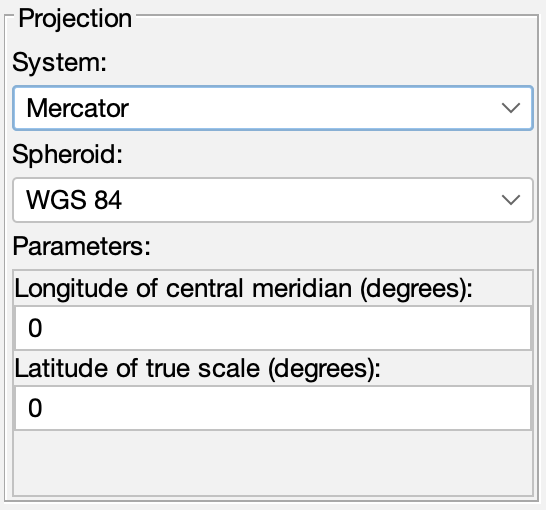

The projection parameters panel allows you to modify the map projection system, spheroid, and map projection system-specific parameters:

There are a total of 31 map projection systems and 20 ellipsoid models. For a full discussion of the map projections, see:
Snyder, John P. 1987. Map projections: a working manual. USGS Professional Paper 1395. Washington, DC: United States Government Printing Office.
Although most projection system parameters and units are self explanitory, the documentation for the underlying General Cartographic Transformations Package (GCTP) software is also useful and may be found at:
http://edcwww.cr.usgs.gov/pub/software/gctpc
or in the CoastWatch Utilities user's guide. The projection system and spheroid may be changed by clicking the corresponding System or Spheroid drop-down lists and selecting the desired setting. When the system is changed, the system-specific Parameters are reset to blank and must be entered in the units indicated by the parameter descriptions. You must enter any angle parameters in decimal degrees in the range [-90..90] for latitude and [-180..180] for longitude. In some projection systems such as Geographic or Interrupted Goode Homolosine, there are no required parameters and the parameter list is blank.
Once the new projection parameters are entered, click Apply to update the master view. You can also click Revert to reset the projection parameters back to the current master view if you make a mistake.